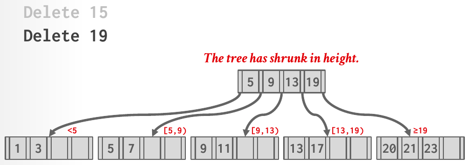

Database Internals in Go · Unit 4 · Lesson 6
P2.6 Deletion: Merging and Root Collapse
Finish Remove: merge an underflowing page into its neighbor when the sibling can't lend, repair internal pages by rotating or pulling down separators, collapse the root, and give every page that leaves the tree back to the buffer pool.
After the last lesson, a leaf that underflows can borrow only from a sibling with an entry to spare. When the sibling sits at its minimum, the two pages have to become one. A merge takes an entry out of the parent, so the parent can underflow in turn, and the repair climbs the tree until it reaches a page that is still full enough, or the root. This stage completes deletion for trees without tombstones, up to the tree losing a level or becoming empty.
Unit 4, Lesson 1: a tree has LeafMaxSize = 5 and InternalMaxSize = 4. What do its leaf and internal pages return from MinSize?
Unit 2, Lesson 8: page 9 is in memory, unpinned and dirty, and DeletePage(9) is called. What happens to its modified bytes?
Unit 3, Lesson 8: on the lecture's tree, T1 runs Insert 25 with basic (pessimistic) latch crabbing. C is [23] and the leaf F is [23, 31], which is full. Which latches does T1 hold when it reaches F?
Merging two leaves
Stage 5 handled an underflowing page whose sibling holds more than MinSize entries. When the sibling holds exactly MinSize, nothing can be borrowed, and the doc comment of Remove says what happens: "merge the two pages: the right page of the pair moves into the left page and is deleted (TracedBufferPoolManager.DeletePage, after dropping its guard), and the separator between them leaves the parent".
"The right page of the pair" depends on which sibling was chosen. If the underflowing page used its right sibling, the sibling moves into the page. If it is a last child and used its left sibling, the page itself moves into the sibling and is the one deleted. Either way, entries only ever move leftwards, so the left page keeps its place in the leaf chain, and three things change besides the entries:
- the left leaf's next page ID becomes the right leaf's, which unlinks the right leaf from the chain;
- the parent loses the separator and the child pointer of the right page, both at the right page's index, so its size drops by one;
- the right page is deleted through the buffer pool, after its guard is dropped.
With a leaf max size of 4 (min size 2), TestBPlusTreeMergeLeafWithRight removes 1 from (3,5) / (|1,2) (|3,4) (|5,6). The leaf [2] underflows, its right sibling [3,4] is at its minimum, so [3,4] moves into it and the separator 3 leaves the root: (5) / (|2,3,4) (|5,6). ...MergeLeafWithLeft removes 6 instead, and the last leaf moves into [3,4]: (3) / (|1,2) (|3,4,5).
The merged page always fits, which is why the min sizes were chosen as they were (Lesson 1). An underflowing leaf holds MinSize − 1 entries and its sibling MinSize, so the merged leaf holds 2·MinSize − 1, at most MaxSize − 1 when MinSize is MaxSize / 2 rounded down. That is below the size at which a leaf splits, so a merge can never trigger a split. For internal pages, rounding MinSize up gives at most MaxSize children after a merge, which an internal page may hold at rest.
When the parent underflows
A leaf merge removes one child from the parent. If the parent is the root, or still holds at least its MinSize children, the deletion is over. Otherwise the parent is repaired with the same rules, one level up: the right sibling under the grandparent if there is one, otherwise the left; borrow if the sibling holds more than MinSize children; merge if not. The repair stops at the first page that doesn't underflow, after a borrow, or at the root. The guards of the whole path are already in the write set, so a loop that walks up it, one level per iteration, can do the whole repair.
Internal pages need the parent's separator in both moves, because an internal page's key 0 is unused and the separator is the only key that bounds the leftmost child of the right page.
- An internal merge pulls the separator down. The right page's children are appended to the left page, and the separator from the parent becomes the key in front of the right page's first child, the slot that was invalid in the right page. Then the separator and the right page's pointer leave the parent.
- An internal borrow rotates through the parent. Borrowing from the right sibling, the page gains the sibling's first child, with the parent's separator as its key; the sibling's key 1 moves up to replace the separator, and the sibling drops its first child. Borrowing from the left, the page gains the sibling's last child at the front, the old separator becomes the key in front of the page's previous first child, and the sibling's last key moves up.
Two traces from the tests, with a leaf max size of 4 and an internal max size of 3 (internal min size 2):
- Merge:
(5,9) / (3) (7) (11) / (|1,2) (|3,4) (|5,6) (|7,8) (|9,10) (|11,12), remove 1. The first two leaves merge into[2,3,4], leaving their parent(3)with one child. Its right sibling(7)holds 2 children, its minimum, so they merge: the separator 5 comes down between them, giving(5,7), and the root loses 5:(9) / (5,7) (11) / (|2,3,4) (|5,6) (|7,8) (|9,10) (|11,12). - Borrow:
(5) / (3) (7,9) / (|1,2) (|3,4) (|5,6) (|7,8) (|9,10), remove 1. The leaves merge as before, and the parent is left with one child. Its right sibling(7,9)holds 3 children, more than 2, so it lends its first child[5,6]: the root's 5 comes down as that child's key, the sibling's 7 goes up, and the result is(7) / (5) (9) / (|2,3,4) (|5,6) (|7,8) (|9,10).
The same "redistribute first" rule holds for internal pages. With an internal max size of 4, TestBPlusTreeMergeInternalBorrow expects the borrow above although the two internal pages would fit together, as BorrowBeforeMerge did for leaves.
The root collapses
The root has its own rules, because it has no parent and no sibling:
- A root leaf may hold a single entry. When its last entry goes, the tree is empty: delete the root page and record
common.InvalidPageIDin the header page.IsEmptythen returns true, and the nextInsertstarts a new root, as it did for the first key. - An internal root needs at least two children. When a merge below leaves it with one, that child becomes the root: write the child's page ID into the header page and delete the old root. This is the only way a B+tree loses a level, and like growth, it happens at the top, so every leaf stays at the same depth.
TestBPlusTreeMergeRootCollapse removes 1 from (3) / (|1,2) (|3,4): the leaves merge into [2,3,4], the root keeps one child, and that leaf becomes the root, with a page ID different from the old root's. Both cases change the header page, which is why Remove holds the header's write guard: the context's comment asks you to check that ctx.HeaderPage is not nil before changing the root.

DeletePage of the old root (Lecture #08, slide 40).#08 B+Trees, "B+ tree deletion operations" (45:35), slides 36–40: from the merge in Delete 19 to the tree shrinking by one level. Skip ahead past the borrow from the last lesson.
Deleted pages go back to the buffer pool
A merged-away page and an old root are no longer part of the tree, and nothing points to them any more. If the tree just forgets them, their page IDs stay allocated and their space on disk is never reused. The writeup's requirements forbid allocating memory for the tree outside the buffer pool, and the same discipline applies in reverse: pages leave through the buffer pool. Call t.bpm.DeletePage(pageID), which forwards to your Project 1 DeletePage.
Order matters. Project 1's DeletePage "does nothing and returns false" while the page is pinned, and the tree's own guard is a pin. So drop the page's guard first, then delete it. If the guard is also in ctx.WriteSet, take it out of the slice too; Drop on a dropped guard does nothing, but a set that lists guards you no longer hold is easy to misuse later. The header page is never deleted, not even when the tree becomes empty: it belongs to the tree for its whole life.
TestBPlusTreeMergeDeletedPagesFreed checks this with a disk manager that records every DeletePage it receives. It inserts 200 keys, removes 190, and then requires that every page that left the tree was deleted and that no page still in the tree was. CMU's tests don't check this, and the test depends on Project 1: your DeletePage must call the disk scheduler's DeallocatePage, which the P1.6 tests already required.
A C++ std::deque<WritePageGuard> drops a guard when it is popped. A Go slice of *WritePageGuard does nothing of the kind: re-slicing with ctx.WriteSet = ctx.WriteSet[:level] forgets the pointers but leaves the latches and pins held. Drop the guards you remove, then re-slice. The reverse mistake is harmless but confusing: ctx.Release() calls Drop on whatever is still in the slice, and a second Drop of the same guard is a no-op.
Check your understanding
Leaf max size 4, internal max size 4. The tree is (3,5) / (|1,2) (|3,4) (|5,6), and 3 is removed. What is the tree afterwards, and which page is deleted?
Leaf max size 4, internal max size 3. The tree is (5,9) / (3) (7) (11) / (|1,2) (|3,4) (|5,6) (|7,8) (|9,10) (|11,12), and 6 is removed. What is the result?
Leaf max size 4, internal max size 4. The tree is (3) / (|1,2) (|3,4), and 4 is removed. For which pages does Remove call DeletePage?
A merge calls t.bpm.DeletePage(rightID) while it still holds the write guard on rightID, and drops the guard later in ctx.Release(). What happens?
Build it: merging and root collapse (stage P2.6)
You extend Remove in btree/b_plus_tree.go and add helpers to the two node page files. Run commands from go_db_internals/intro_to_db. The rules, in plain words:
- Sibling: the right one under the same parent if there is one, otherwise the left. Borrow if it holds more than
MinSize; merge if it holds exactlyMinSize. The same for leaves and internal pages. - A merge moves the right page of the pair into the left one. Leaves: relink the chain and remove the separator from the parent. Internal pages: the separator comes down in front of the right page's first child.
- After a merge, check the parent; stop at a page that doesn't underflow, after a borrow, or at the root.
- Root: an empty root leaf empties the tree (header root
common.InvalidPageID); an internal root with one child is replaced by that child. - Every page that leaves the tree is deleted with
t.bpm.DeletePage, after its guard is dropped. Never the header page.
-
What to think about
Which of the two leaves is "right" when the sibling is the left one? Which index of the parent holds the separator and the pointer that must go? Whose guard has to be dropped before
DeletePage, and is that guard in the context?The approach
Name the pair by position: if
sibIndex > index, the left page is the underflowing leaf and the right page is the sibling, atsibIndex; otherwise the left page is the sibling and the right page is the underflowing leaf, atindex. Move all of the right page's entries to the end of the left page with your range-moving helper, set the left page's next page ID to the right page's, and remove the entry at the right page's index from the parent with an internal-page remove-at helper (the mirror of the insert-at helper from stage 3). Then drop the guards of both leaves, take them out of the write set if they are in it, and callt.bpm.DeletePageon the right page's ID.One key fragment
left.SetNextPageID(right.NextPageID()) // unlink right from the chain parent.removeAt(rightIndex) // its separator and its pointerCheckpoint: leaf mergesRun
go test -race -run '^TestBPlusTreeMerge(LeafWithRight|LeafWithLeft)$' ./btree/. They remove 1 and 6 from(3,5) / (|1,2) (|3,4) (|5,6)and expect(5) / (|2,3,4) (|5,6)and(3) / (|1,2) (|3,4,5). Success printsok intro_to_db/btree. Merging the left page into the right one keeps the keys in order but fails the shape check, because the separator that leaves the parent is the wrong one. -
What to think about
Which two root sizes call for a collapse, one for each page type? Which guard lets you change the root ID, and what should
ctx.RootPageIDsay afterwards? Which page is deleted in each case?The approach
When the page being checked is the root (
ctx.IsRootPage), never look for a sibling. A leaf root of size 0 makes the new root IDcommon.InvalidPageID; an internal root of size 1 makes itValueAt(0). Write the new ID throughAsBPlusTreeHeaderPage(ctx.HeaderPage.DataMut()), updatectx.RootPageID, drop the old root's guard, remove it from the write set, and delete the old root's page. Any other root size needs nothing.One key fragment
newRoot := common.InvalidPageID // an empty root leaf: the tree is empty if !page.IsLeafPage() { newRoot = t.internalPage(guard.Data()).ValueAt(0) // the only child }Checkpoint: root collapseRun
go test -race -run '^TestBPlusTreeMergeRootCollapse$' ./btree/. It removes 1 from(3) / (|1,2) (|3,4)and expects the leaf(|2,3,4)as the new root, recorded in the header page. Success printsok intro_to_db/btree. Without the collapse, the old root stays with one child:--- FAIL: TestBPlusTreeMergeRootCollapse (0.00s) b_plus_tree_delete_extra_test.go:236: tree shape: got: () / (|2,3,4) want: (|2,3,4) ... b_plus_tree_delete_extra_test.go:246: invalid tree: root internal page 3 has 1 children, want at least 2 -
What to think about
After a merge, which page might underflow next, and where is its guard? What are the three ways the loop ends? In an internal merge, what key should stand in front of the right page's first child once it sits inside the left page?
The approach
Make the stage-5 repair a loop over a level of the write set, starting at the leaf. Each pass: if the page is the root, collapse it if needed and stop; if it holds at least
MinSize, stop; otherwise pick the sibling, write-guard it, and borrow or merge according to the page type. After a borrow, stop. After a merge, delete the right page and go up one level. For the internal merge, set the right page's key 0 to the parent's separator, move all of the right page's entries to the end of the left page with your stage-4 range-moving helper, and remove the separator and pointer from the parent.One key fragment
// key 0 of the right page is unused; give it the separator before moving right.SetKeyAt(0, parent.KeyAt(rightIndex))Checkpoint: cascading mergesRun
go test -race -run '^TestBPlusTreeMergeInternalPages$' ./btree/. It removes 1, then 2 and 3, then 12 from the 12-key tree with internal max size 3, so internal pages merge in both directions and the root collapses at the end. Success printsok intro_to_db/btree. If a run never ends, an internal page has probably been left with a single child and the loop spins on it; rerun with-timeout 120safter the regex to see where. -
What to think about
Once the moved child sits in its new page, which key bounds it there? From the right sibling it was child 0, whose key slot is unused, so the key has to come from somewhere else. And which key must replace the separator in the parent so that both pages' ranges stay correct?
The approach
From the right sibling: append (the parent's separator at
sibIndex, the sibling's child 0) to the page, set the parent's separator to the sibling's key 1, and remove the sibling's entry 0. From the left sibling: insert the sibling's last child at index 0 of the page, set the page's key 1 (now in front of its old first child) to the parent's separator atindex, set that separator to the sibling's last key, and remove the sibling's last entry. Draw the four pages before and after on paper first; the tests check the exact keys.One key fragment
// borrowing from the right: the separator comes down, the sibling's key 1 goes up node.insertAt(node.Size(), parent.KeyAt(sibIndex), sib.ValueAt(0)) parent.SetKeyAt(sibIndex, sib.KeyAt(1))Checkpoint: internal borrows and BusTub's examplesRun
go test -race -run '^TestBPlusTreeMerge(InternalBorrow|BatchExample|DeleteTestNoIterator)$' ./btree/.InternalBorrowborrows from the right with internal max sizes 3 and 4 and from the left;BatchExamplereplays the operations in BusTub'sBatchOpsFromFilecomment (i1toi10,i30,d8,d9);DeleteTestNoIteratoris BusTub's own deletion test, which removes all five keys of a leaf-max-2 tree and expectsRootPageID()to becommon.InvalidPageID. Success printsok intro_to_db/btree. Preferring the left sibling fails the batch example:--- FAIL: TestBPlusTreeMergeBatchExample (0.00s) b_plus_tree_delete_extra_test.go:314: tree shape: got: (5) / (3) (9) / (|1,2) (|3,4) (|5,6,7) (|10,30) want: (5) / (3) (7) / (|1,2) (|3,4) (|5,6) (|7,10,30) -
What to think about
List every place a page leaves the tree: the right page of each merge, an old internal root, an empty root leaf. For each, which guards are still held when you call
DeletePage, and could any of them be on that page? What doesDeletePagereturn if one is?The approach
While debugging, check the result of
t.bpm.DeletePageand panic if it is false: a refused delete means a guard on that page is still alive, often the right page's guard still in the write set, or the sibling's. Then run the random tests: they compare the tree with a map after hundreds of operations, so they find the cases a hand-made example misses.One key fragment
rightGuard.Drop() // the pin must be gone first if !t.bpm.DeletePage(rightID) { panic("btree: merged page still pinned") // debugging aid }Checkpoint: pages freed, random mixesRun
go test -race -run '^TestBPlusTreeMerge(DeletedPagesFreed|DeleteAll|RandomMix|ReleasesLatches)$' ./btree/.DeleteAllremoves every key in four configurations, checks for an empty tree, and inserts again;RandomMixruns 800 random inserts and removals against a map in five configurations. Success printsok intro_to_db/btree. ForgettingDeletePageafter merges fails with a list of page IDs:136 pages left the tree but were never deleted from the buffer pool (DeletePage, after dropping their guards): [2 4 5 6 ...].
From go_db_internals/intro_to_db, run:
go test -race -run '^TestBPlusTreeMerge' ./btree/It runs the eleven stage-6 tests: BusTub's TestBPlusTreeMergeDeleteTestNoIterator and the extra tests TestBPlusTreeMergeLeafWithRight, ...LeafWithLeft, ...RootCollapse, ...InternalPages, ...InternalBorrow, ...BatchExample, ...DeleteAll, ...DeletedPagesFreed, ...RandomMix and ...ReleasesLatches. Success prints ok intro_to_db/btree and the time, about 4 seconds.
Typical failures are shape mismatches (got: and want: lines, then a drawing of your tree), invalid trees (invalid tree: internal page 7 has 1 children, fewer than its min size 2, or the leaf chain (next page ids from the leftmost leaf) visits ..., but the leaves in key order are ... after a merge that forgot SetNextPageID), and the list of leaked pages above. The worst failure prints nothing: a loop that never ends on an internal page with a single child is a CPU loop, not a latch wait, so no test's own time limit can stop it. Keep the time limit after the regex:
go test -race -run '^TestBPlusTreeMerge' -timeout 120s ./btree/When it fires, go test names the test and prints every goroutine's stack; the one inside your repair loop shows the line it spins on. Then run stages 1 to 5 again ('^TestBPlusTree(Page|Search|Insert|Grow|Borrow)'), since the repair loop replaced code they use.
DeletePage fails while the tree still holds the page's guard. Ask your teacher (me) before moving on.
Primary sources: the CMU 15-445/645 Fall 2025 Project #2 writeup (Task #2, Requirements and Hints, Development Roadmap); BusTub src/include/storage/index/b_plus_tree.h (Context), src/include/storage/index/b_plus_tree_debug.h (the BatchOpsFromFile example) and test/storage/b_plus_tree_delete_test.cpp at commit d49b823; Lecture #08 slides 36–40 and notes (section 2, Deletion); this course's btree/b_plus_tree.go, btree/b_plus_tree_delete_extra_test.go, btree/b_plus_tree_delete_test.go and bufferpool/buffer_pool_manager.go (DeletePage).